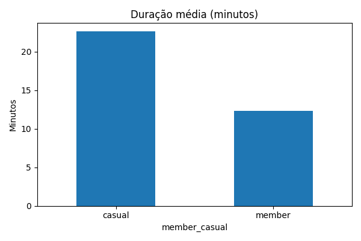
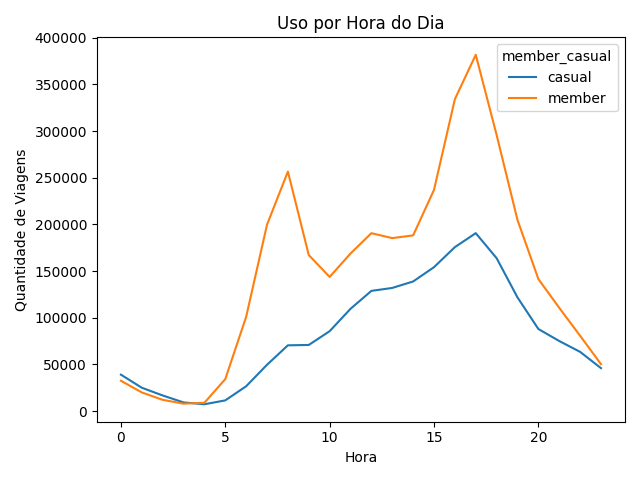
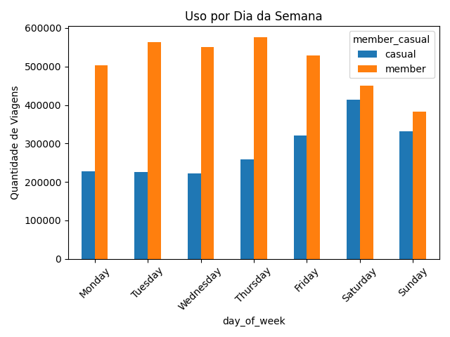

Relatório Cyclistic — Análise 12 meses (2025)
Objetivo: entender diferenças de comportamento entre casual e member para apoiar estratégias de conversão.
Principais insights
- Casual tem viagens mais longas (perfil mais recreativo/turístico).
- Member tem padrão forte de uso em dias úteis e picos de horário comercial (perfil de deslocamento).
Interpretação: membros usam como transporte; casuais usam como lazer. Isso direciona campanhas diferentes.
1) Duração média (minutos)
Comparação direta entre member e casual.

O que isso indica: viagens mais longas sugerem lazer (casual) e viagens mais curtas sugerem deslocamento (member).
2) Uso por hora do dia
Quantidade de viagens por hora para cada tipo de usuário.

O que isso indica: picos em 7–9h e 16–18h reforçam uso de commute, típico de members.
3) Uso por dia da semana
Comparação entre dias úteis e fim de semana.

O que isso indica: casual tende a aumentar no fim de semana; member se mantém forte durante a semana.
Recomendações (exemplo)
- Campanhas de upgrade para casual focadas em fim de semana (benefícios para lazer).
- Oferta de plano com vantagens em horários de pico (commute) para aumentar retenção.
- Mensagens personalizadas por comportamento: “lazer” vs “deslocamento”.
Arquivo gerado automaticamente via Python. Basta abrir este HTML no navegador.